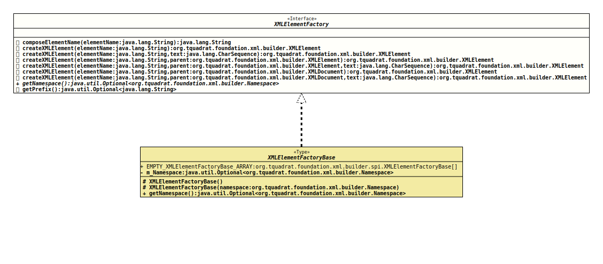

Module org.tquadrat.foundation.xml
Interface XMLElementFactory
- All Known Implementing Classes:
XMLElementFactoryBase
@ClassVersion(sourceVersion="$Id: XMLElementFactory.java 1071 2023-09-30 01:49:32Z tquadrat $")
@API(status=STABLE,
since="0.0.5")
public sealed interface XMLElementFactory
permits XMLElementFactoryBase
The definition of a helper class for the creation of
XMLElement
instances with an element name belonging to a specified namespace.- Author:
- Thomas Thrien (thomas.thrien@tquadrat.org)
- Version:
- $Id: XMLElementFactory.java 1071 2023-09-30 01:49:32Z tquadrat $
- Since:
- 0.0.5
- UML Diagram
-

UML Diagram for "org.tquadrat.foundation.xml.builder.XMLElementFactory"
{kind=link}
-
Method Summary
Modifier and TypeMethodDescriptiondefault StringcomposeElementName(String elementName) Composes the name of an XML element from the prefix and the given element name.
The given element name is validated using the method that is provided byXMLBuilderUtils.getElementNameValidator().default XMLElementcreateXMLElement(String elementName) Creates an XML element for the given element name that supports attributes, namespaces, children, text,CDATAand comments.
The given element name is validated using the method that is provided byXMLBuilderUtils.getElementNameValidator().default XMLElementcreateXMLElement(String elementName, CharSequence text) Creates an XML element for the given element name that supports attributes, namespaces, children, text,CDATAand comments, and adds the given text.default XMLElementcreateXMLElement(String elementName, XMLDocument parent) Creates an XML element for the given tag and adds it as child to the given document.
The given element name is validated using the method that is provided byXMLBuilderUtils.getElementNameValidator().default XMLElementcreateXMLElement(String elementName, XMLDocument parent, CharSequence text) Creates an XML element for the given tag and with the given text, and adds it as child to the given document.
The given element name is validated using the method that is provided byXMLBuilderUtils.getElementNameValidator().default XMLElementcreateXMLElement(String elementName, XMLElement parent) Creates an XML element for the given element name that supports attributes, namespaces, children, text,CDATAand comments, and adds it as child to the given parent.
The given element name is validated using the method that is provided byXMLBuilderUtils.getElementNameValidator().default XMLElementcreateXMLElement(String elementName, XMLElement parent, CharSequence text) Creates an XML element for the given element name that supports attributes, namespaces, children, text,CDATAand comments, adds the given text, and adds it as child to the given parent.
The given element name is validated using the method that is provided byXMLBuilderUtils.getElementNameValidator().Returns the namespace this XML element factory was created with.Returns the prefix from the namespace this XML element factory was created with.
-
Method Details
-
composeElementName
Composes the name of an XML element from the prefix and the given element name.
The given element name is validated using the method that is provided byXMLBuilderUtils.getElementNameValidator().- Parameters:
elementName- The name of an XML element without any namespace prefix.- Returns:
- The final element name.
-
createXMLElement
Creates an XML element for the given element name that supports attributes, namespaces, children, text,CDATAand comments.
The given element name is validated using the method that is provided byXMLBuilderUtils.getElementNameValidator().- Parameters:
elementName- The element name.- Returns:
- The new XML element.
-
createXMLElement
Creates an XML element for the given element name that supports attributes, namespaces, children, text,
CDATAand comments, and adds the given text.The given element name is validated using the method that is provided by
XMLBuilderUtils.getElementNameValidator().- Parameters:
elementName- The element name.text- The text for the new element.- Returns:
- The new XML element.
-
createXMLElement
Creates an XML element for the given element name that supports attributes, namespaces, children, text,CDATAand comments, and adds it as child to the given parent.
The given element name is validated using the method that is provided byXMLBuilderUtils.getElementNameValidator().- Parameters:
elementName- The element name.parent- The parent element.- Returns:
- The new XML element.
-
createXMLElement
Creates an XML element for the given element name that supports attributes, namespaces, children, text,CDATAand comments, adds the given text, and adds it as child to the given parent.
The given element name is validated using the method that is provided byXMLBuilderUtils.getElementNameValidator().- Parameters:
elementName- The element name.parent- The parent element.text- The text for the new element.- Returns:
- The new XML element.
-
createXMLElement
Creates an XML element for the given tag and adds it as child to the given document.
The given element name is validated using the method that is provided byXMLBuilderUtils.getElementNameValidator().- Parameters:
elementName- The element name.parent- The document.- Returns:
- The new XML element.
-
createXMLElement
Creates an XML element for the given tag and with the given text, and adds it as child to the given document.
The given element name is validated using the method that is provided byXMLBuilderUtils.getElementNameValidator().- Parameters:
elementName- The element name.parent- The document.text- The text for the new element.- Returns:
- The new XML element.
-
getNamespace
Returns the namespace this XML element factory was created with.- Returns:
- An instance of
Optionalthat holds the namespace.
-
getPrefix
Returns the prefix from the namespace this XML element factory was created with.- Returns:
- An instance of
Optionalthat holds the prefix.
-